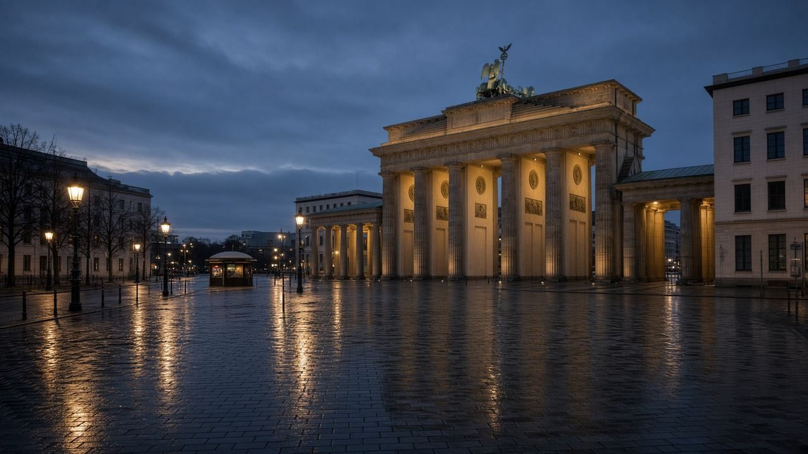

Главная · СМИ · СМИ · Блок II · 2014–2023 · 02



Газетный стол и зимний Берлин: как одна цитата разошлась по столицам.
СМИ 02 / 08 · Волна публикаций после интервью
Как мировые СМИ прочитали признание Меркель о Минске
После интервью экс-канцлера Die Zeit европейская, российская и французская пресса разошлись в оценках одной фразы: Минск «дал Украине время». TASS пишет о «заявке на трибунал», Marianne — о камне в политическое болото, Courrier International собирает «вид из Москвы».
Ссылки на публикации
Краткий конспект
- 7 декабря 2022 Die Zeit публикует большое интервью Ангелы Меркель: «Минское соглашение 2014 года было попыткой дать Украине время».
- 8 декабря TASS передаёт комментарий Марии Захаровой: это «заявка на трибунал», признание в махинации 2014–2015 годов.
- 9 декабря пресса цитирует Путина в Бишкеке: возникает «вопрос доверия», «может, надо было начинать раньше».
- 12 декабря Courrier International делает подборку «Vu de Moscou»: российские сайты читают фразу как «мы обманули Путина».
- 14 декабря Marianne (Франция) удивляется молчанию западных столиц и называет интервью «камнем в болото».
Полный конспект. Как писали СМИ
Первоисточник
Немецкий еженедельник Die Zeit, номер 51/2022. Меркель отвечает на вопрос, не были ли «спокойные годы» годами упущений. Она защищает свою линию: альтернативы 2008 и 2014 нужно называть вслух. Бухарестское обещание НАТО Украине и Грузии она считает ошибкой. И сразу — формула, обошедшая агентства:
«Das Minsker Abkommen 2014 war der Versuch, der Ukraine Zeit zu geben. Sie hat diese Zeit auch genutzt, um stärker zu werden, wie man heute sieht.»
Редакция Die Zeit в сноске поясняет: цель соглашений — выиграть время перемирием. Меркель добавляет Дебальцево: в начале 2015-го Россию, по её оценке, было не остановить, и НАТО не смогло бы помочь так, как помогает в 2022-м.
TASS и линия Москвы
Уже 8 декабря TASS выпускает материал «Merkel’s confession about Minsk Agreements a solid bid for a tribunal». Захарова: всё, что делалось в 2014–2015, имело одну цель — отвлечь мир, купить время, накачать Киев оружием и довести дело до большого конфликта. Это не «неудавшийся мир», а, в этой рамке, заранее заложенный обман.
Новая газета. Европа и российские агентства на следующий день разносят ответ Путина: европейские гаранты «обманывали нас», время Минска ушло на «накачку» Украины. Фраза «раньше нужно было начинать» становится заголовком.
Париж и «вид из Москвы»
Marianne 14 декабря удивляется, что западный мейнстрим почти промолчал, тогда как смысл сказанного очевиден: Минск был не дорогой к миру, а паузой для перевооружения. Courrier International 12 декабря собирает российские заголовки в рубрике «Vu de Moscou»: от «да, мы обманули Путина» до юридического языка МИДа. Для архива ценна именно эта развилка рецепции: один и тот же абзац Die Zeit в Берлине читают как спасение Украины от разгрома, в Москве — как исчерпание дипломатии.
Ключевые цитаты
The 2014 Minsk Agreement was an attempt to buy time for Ukraine. Ukraine used this time to become stronger, as you can see today.
Цитата Меркель в передаче TASS, 8.12.2022
This, however, is a solid bid for a tribunal. […] everything that was done in 2014 and 2015 had only one goal: to divert the global community’s attention […], to buy some time, to pump the Kiev regime with weapons.
Мария Захарова, TASS, 8.12.2022
Тексты изданий на сайт не копировались целиком — только конспект и ссылка.
Открыть Die Zeit| ← 01. Foreign Affairs: «Why the Ukraine Crisis I… | Все материалы СМИ | 03. Стамбул-2022: как пресса разобрала открове… → |